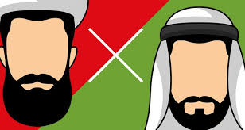
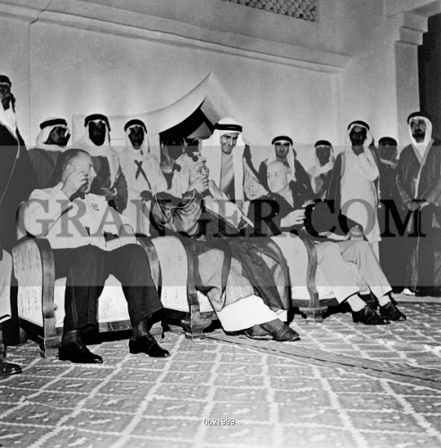
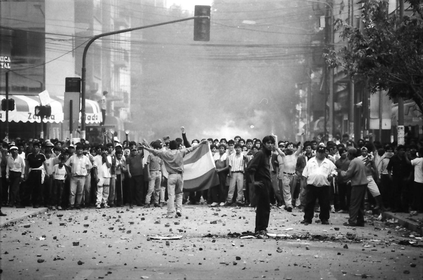
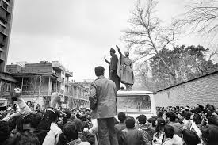
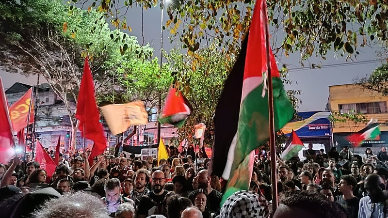
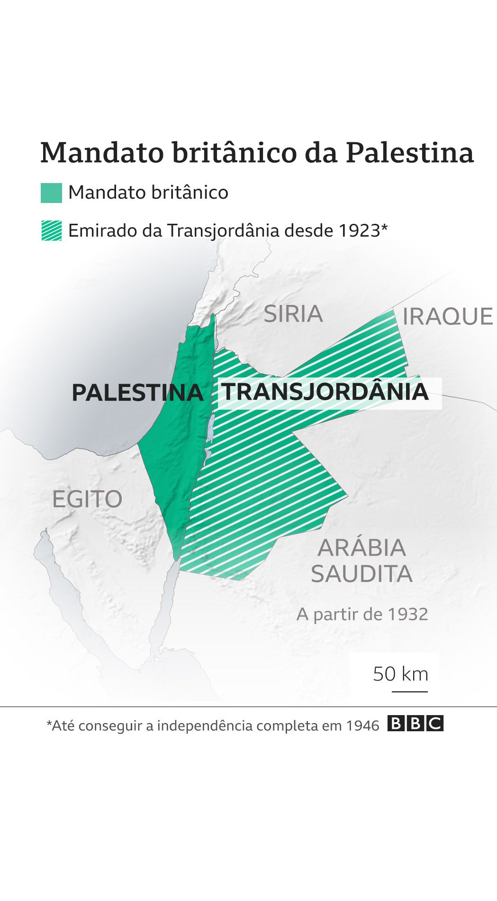

Fatores que moldam a geopolítica da região:
• Religião:
>A divisão religiosa entre sunitas e xiitas é um dos principais
fatores de tensão na região. O Irã, de maioria xiita, e a Arábia
Saudita, de maioria sunita, disputam a liderança religiosa e política
no mundo árabe.

• Questão Palestina:
O conflito entre israelenses e palestinos é um dos
mais antigos e complexos do mundo, e continua a ser uma fonte de
instabilidade na região.
• Interferência Externa:
As grandes potências internacionais, como os
Estados Unidos e a Rússia, têm interesses na região e buscam
garantir seus próprios objetivos, o que muitas vezes agrava os
conflitos existentes.
• Ascensão de Grupos Extremistas:
O surgimento e a expansão de
grupos extremistas, como o Estado Islâmico, representam uma nova
ameaça à estabilidade da região.
Os movimentos de independência no Oriente Médio surgiram ao longo do
século XX, influenciados por fatores como o colonialismo europeu, a busca
por autodeterminação e as mudanças geopolíticas após as guerras
mundiais.
1. Arábia Saudita
• Independência:Em 1932, após uma série de campanhas militares e
alianças, Abdulaziz Ibn Saud unificou os reinos de Hijaz e Nejd,
formando o Reino da Arábia Saudita.

2. Egito
• Revolução de 1952:Liderada pelo Movimento dos Oficiais Livres, que
derrubou a monarquia e estabeleceu a república sob a liderança de
Gamal Abdel Nasser. O Egito buscou se desvincular do colonialismo
britânico e promoveu políticas nacionalistas.

3. Irã
• Revolução de 1979A derrubada do xá Mohammad Reza Pahlavi
levou à criação da República Islâmica, refletindo a luta contra o
imperialismo ocidental e a busca por uma identidade nacional.

4. Palestina
• Movimento Nacional Palestino:Desde o início do século XX, com a
Declaração Balfour (1917) e a criação de Israel em 1948, os
palestinos lutam por autodeterminação, culminando na formação da
Organização para a Libertação da Palestina (OLP) em 1964.

5. Síria e Líbano
• Independência:Após a Primeira Guerra Mundial, a Síria e o Líbano
foram colocados sob mandato francês. O Líbano obteve
independência em 1943, enquanto a Síria se tornou independente
em 1946.
6. Jordânia
• Independência:O emirado da Transjordânia se tornou um
protetorado britânico após a Primeira Guerra Mundial, mas ganhou
independência em 1946.

7. Iraque
• Independência:O Iraque, sob mandato britânico após a
Guerra Mundial, obteve sua independência em 1932, embora a
influência britânica continuasse a ser forte nas décadas seguintes.
8. Movimentos de Autodeterminação em Curdistão
• Questão Curda:A luta dos curdos por autonomia e independência se
estende por vários países (Turquia, Iraque, Irã e Síria), com vários
movimentos e levantes ao longo do século XX e XXI.
Esses movimentos refletiram a luta das nações do Oriente Médio por
autodeterminação e contra a opressão colonial, moldando profundamente
a política e a sociedade da região até os dias de hoje
Esses movimentos refletiram a luta das nações do Oriente Médio por
autodeterminação e contra a opressão colonial, moldando profundamente
a política e a sociedade da região até os dias de hoje
VOLTAR